R 1-1
Méthode de travail universitaire
Tableur, références, logique de classeur
Entraînement : Gymnase de Clairmont
Cliquez une image pour l’ouvrir en grand.
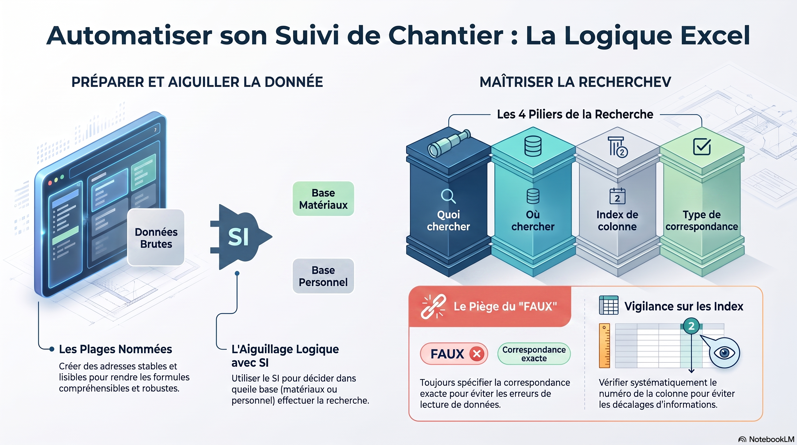
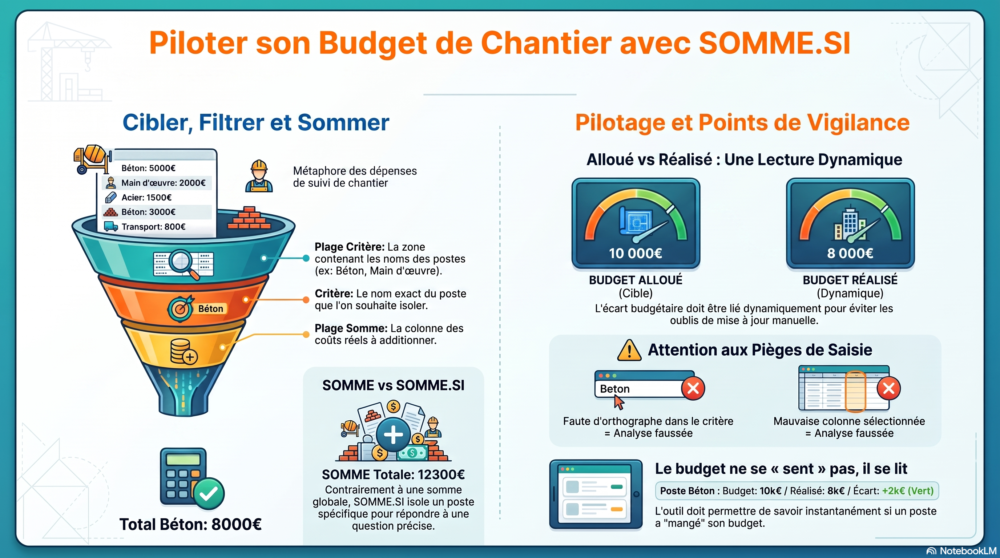
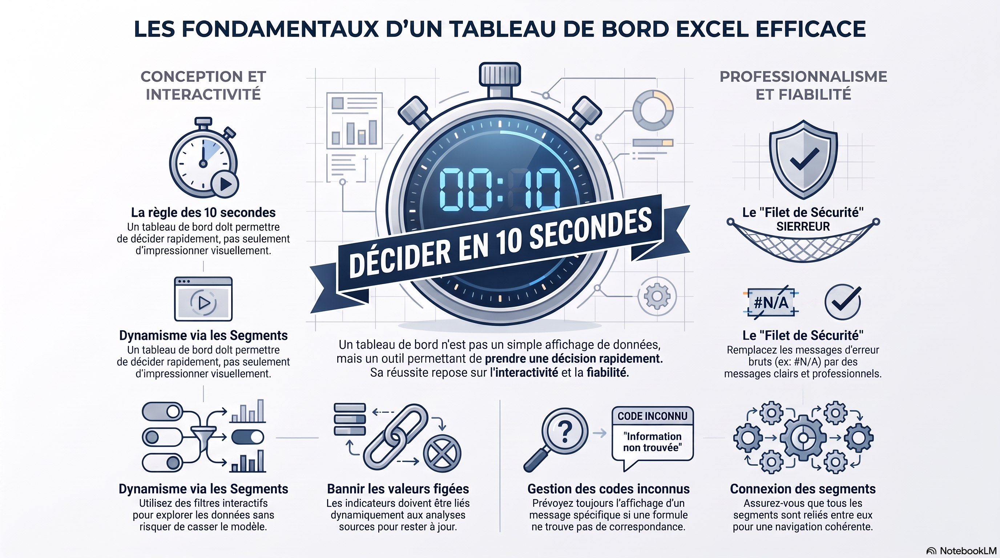
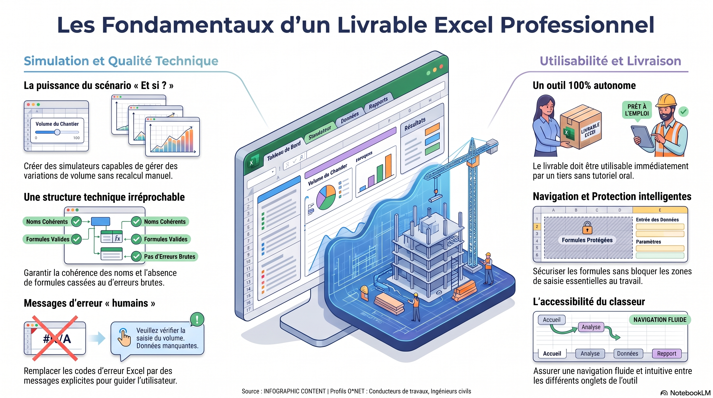
1re année · BUT GC-CD
Méthode de travail, réseaux, métrologie. Ouvrez un laboratoire, consultez les infographies, ou lancez les vidéos lorsqu’un lien est proposé.
R 1-1
Tableur, références, logique de classeur
Entraînement : Gymnase de Clairmont
Cliquez une image pour l’ouvrir en grand.




R 1-10
Hydraulique AEP, charges, pertes, pompe
Entraînement : Valdeau
Cliquez une image pour l’ouvrir en grand.
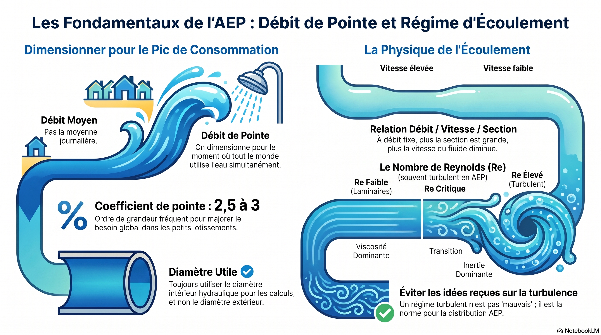
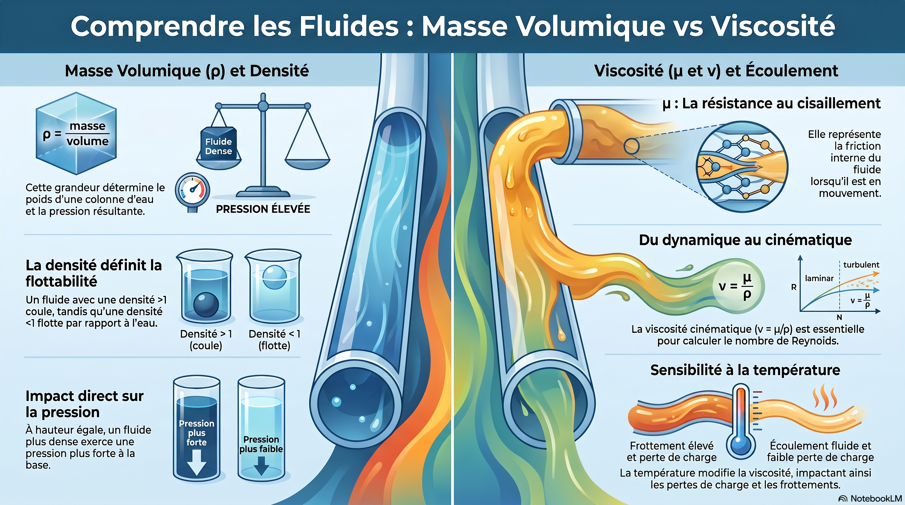
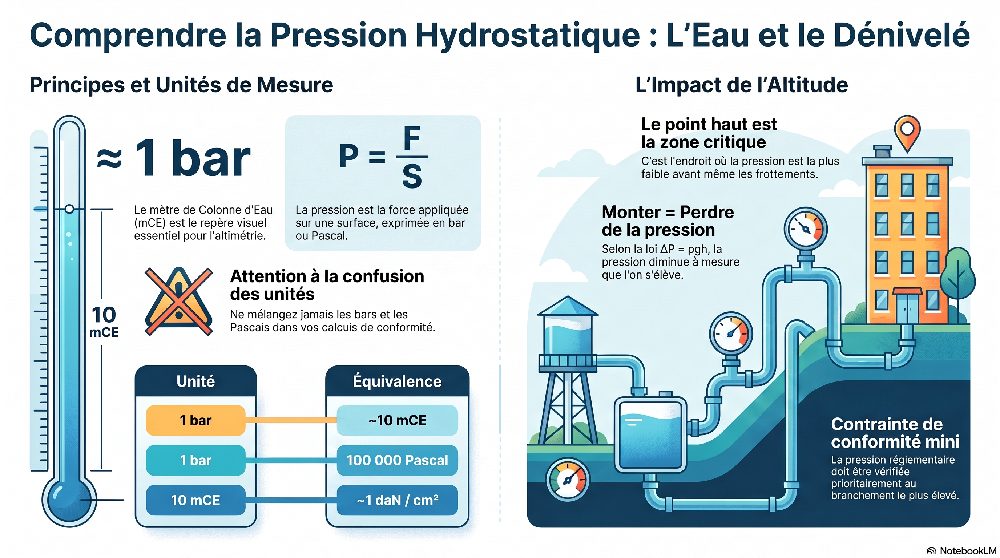
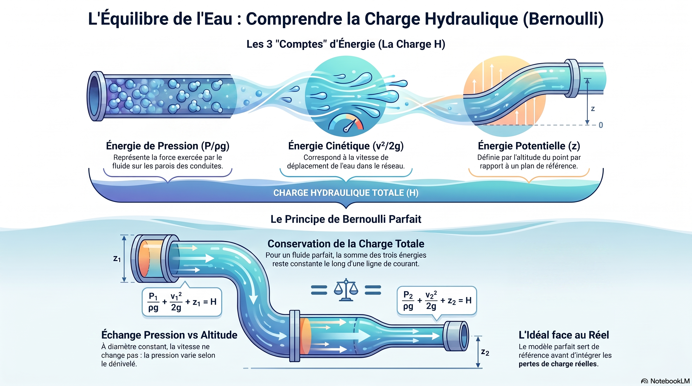
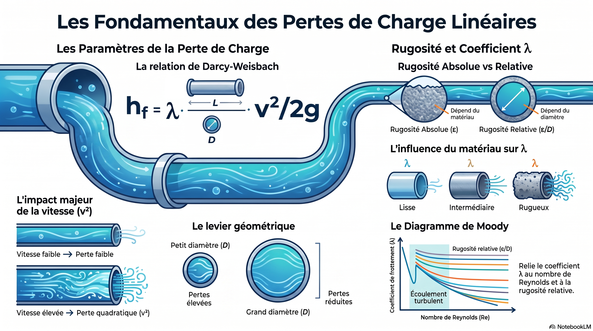
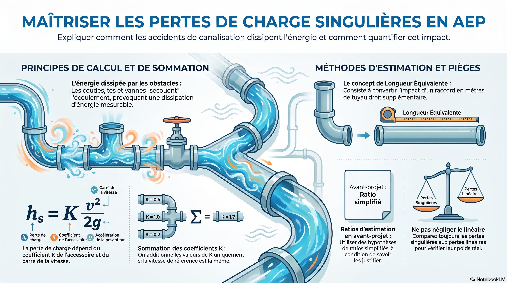
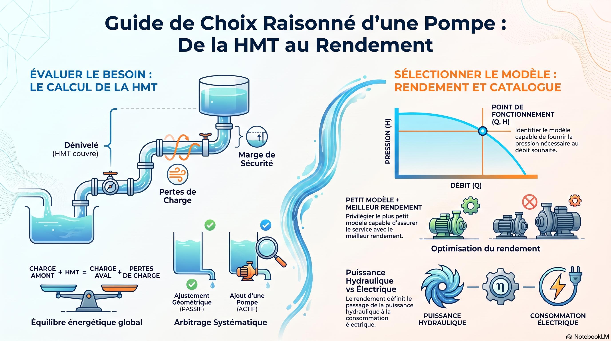
R 1-13
Métrologie, incertitudes, conformité
Entraînement : Pierreclaire
Cliquez une image pour l’ouvrir en grand.
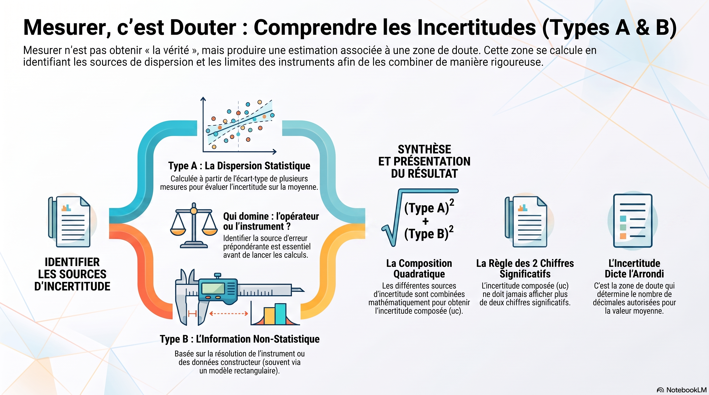
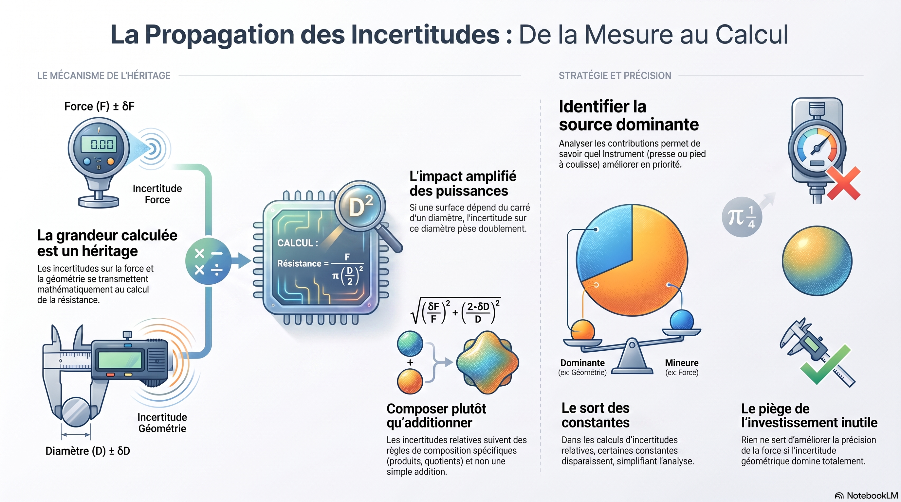
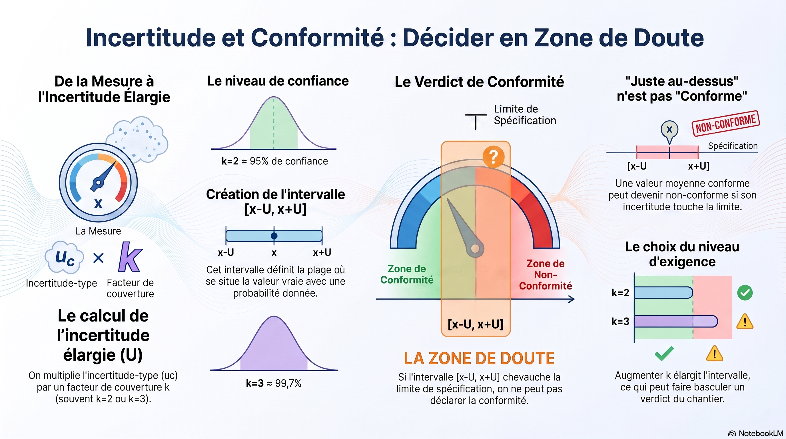
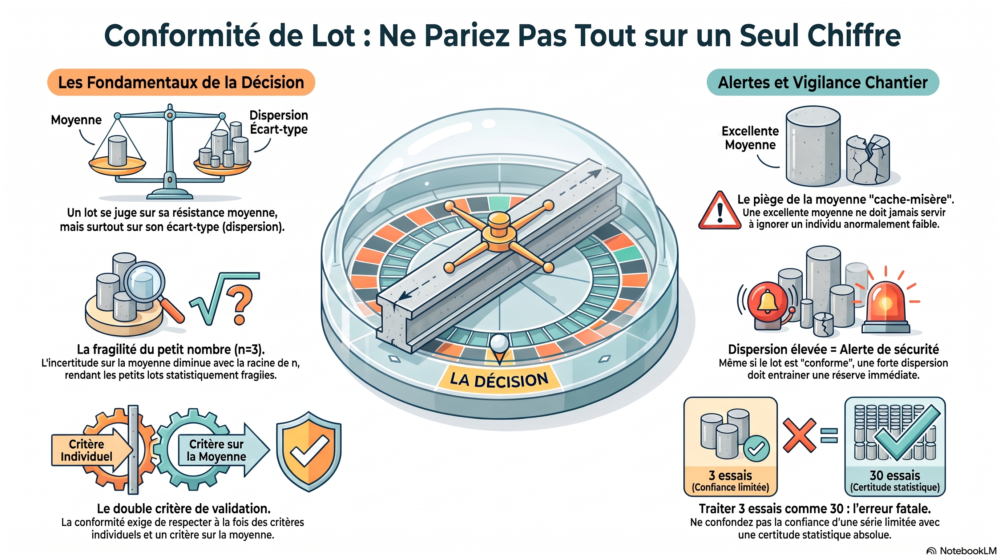
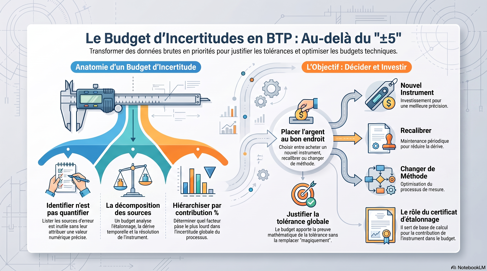
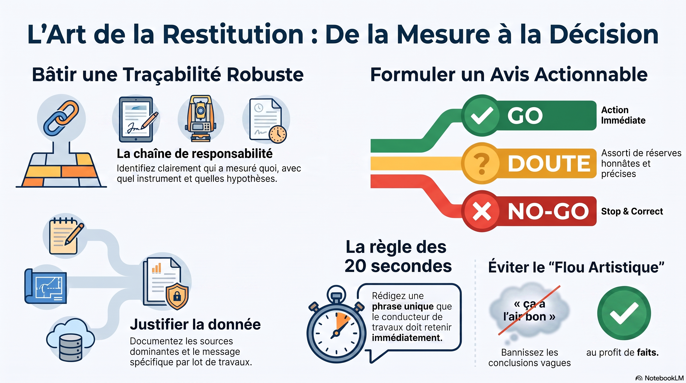